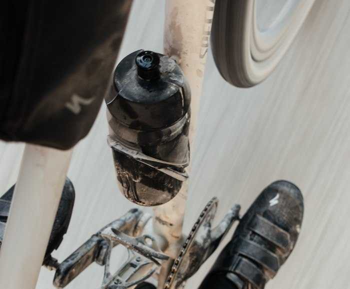
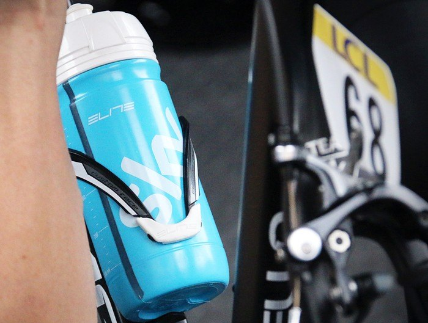

Всё о велосипедах
Что мы знаем о велосипедных флягах? Они бывают разного объема, выполняются из разных материалов и… начинают неприятно пахнуть с течением времени. Особенно неприятно это обнаруживать, когда бутылка для воды подбиралась под цвет рамы или стоила больших денег. Напрашивается вполне благоразумный вывод, что за флягой требуется определенный уход. Хотя от естественного износа ее ничто не убережет, только если она не металлическая.
Под естественным износом предполагается стирание пластика о флягодержатель вне зависимости от его конструкции. До дыр дело, конечно, не дойдет, но внешний вид, как правило, страдает довольно сильно. Вернемся к уходу за бутылкой для воды и расскажем подробнее об этом простом ритуале.
Во-первых, важно понимать, что фляга требует ухода после каждого выезда на велосипеде. Во-вторых, важно помнить, что если фляга из флягодержателя во время поездки ни разу не вынималась, ей все равно требуется уход.
Логика здесь очень простая. Каждый раз, как вы пользуетесь бутылкой, то есть пьете из нее воду, в нее и на нее попадает ваша слюна, а в ней содержится множество бактерий. Бактерии эти будут плодиться и размножаться внутри фляги неминуемо. Эффект усиливается, когда вместо воды внутри находится какой-то напиток, который становится просто раем для этих бактерий. Они размножаются, отчего появляется неприятный запах. В редких случая внутри появляется плесень, тут проще выбросить флягу, чтобы не подвергать риску свое здоровье. И это мы еще не заглядывали в труднодоступные места, где вероятность появления всякой живности растет в геометрической прогрессии.
Второй, не менее важный, фактор заключается во внешнем загрязнении фляги. Конструкция большинства бутылок подразумевает наличие простой пробки, которую легко открыть зубами во время движения. Мы попили, пробку закрыли и поставили бутылку на место. Пока она находится на месте на нее налипает пыль и грязь с дороги. Поэтому важно мыть флягу каждый раз после каждого выезда на велосипеде.
Как мыть велосипедную флягу? Философия мытья питьевой емкости разделяется на два основных направления – посудомоечной машиной и вручную.
Мойка в посудомоечной машине хороша тем, что на это практически не требуется тратить свое время – закинул и пошел заниматься своими делами. Но не станет ли такое агрессивное воздействие чрезмерным? Кроме того, бытует мнение, что это лишняя трата воды. По поводу воды не переживайте. При полной загрузке, воды она потратит меньше, нежели вы мыли бы посуду вручную. Технологии.
По поводу агрессивного воздействия придется говорить несколько подробнее. Проблема ведь в том, что фляги делаются из пластика и горячая вода не самый лучший друг для них. Тем не менее, если фляга и посудомоечная машина сходятся по некоторым параметрам, то мойка безопасна.
Производитель Tacx утверждает, что мыть их фляги в посудомойке безопасно, однако температура воды не должна превышать 40 градусов. Все ли машины греют воду до 40 градусов? Увы, не все. Некоторые модели на минимальном режиме греют воду до 50 градусов. То есть, берем в руки инструкцию по эксплуатации и вдумчиво читаем. Процессу сушки тоже уделяем внимание.
Дэвид Эрнандес из компании Specialized говорит, что большинство их фляг переживут мытье в посудомойке. Однако он не рекомендует наливать горячую воду внутрь для последующего употребления. Причина кроется в миграции вредных веществ из пластика в воду под воздействием той самой высокой температуры. То есть, горячий чай в обычную флягу наливать не стоит. Кто это пробовал, тот знает, что вода приобретает специфический “пластиковый” привкус. Вряд ли это полезно.
В любом случае, нелишним будет изучить надписи на дне свой фляги, обычно на пластике указывается чего с ним делать нельзя, а иногда и температурный режим.
Ксения де Руз, спортивный терапевт Team Ireland говорит, что для гонок чаще всего используются новые бутылки. Когда их мало, бутылки помещают в посудомоечную машину отеля, если такая возможность существует. В противном случае происходит мойка вручную горячей водой, после чего бутылки некоторое время настаиваются со стерилизующими таблетками. Далее следует процесс сушки и складывание их вверх дном.
Ручная мойка бутылки может оказаться быстрой и эффективной, если используется горячая вода и средство для мытья посуды. Обычно процесс выглядит так: внутрь заливается немного воды, добавляется капля моющего средства, закрывается крышка, а дальше энергичное встряхивание. Также не забываем уделить внимание пространству под крышкой, там собирается много всего, что лучше смыть. И вообще, неплохо пройтись какой-то щеткой по внутренней поверхности, чтобы смыть, например, засохшие остатки мякоти сока. То же самое необходимо проделать с крышкой и пробкой. Дальнейшее полоскание чистой водой разумеется само собой.
Из личного опыта могу сказать, что для промывки фляги от моющего средства полоскать придется очень долго и проточная вода не всегда в этом помогает. Как ни мою, всегда остается привкус моющего средства. Неприятно.
Обязательно загляните внутрь и убедитесь, что там не начала расти какая-то плесень или водоросли. Если они есть, попробуйте щеткой почистить, но особых надежд не питайте, лучше сменить флягу. Не пытайтесь пользоваться для этого очистки хлорсодержащими веществами типа отбеливателя. Он может навсегда испортить вкус заливаемой воды и здоровью пользы не принесет.
После мойки, вне зависимости от выбранного способа, флягу и крышку необходимо тщательно просушить. Можно оставить их стекать и сохнуть на полотенце, а можно этим полотенцем промокнуть остатки влаги и все равно оставить на проветривание на некоторое время. Перед хранением важно избавиться от любой влаги внутри. Хранить флягу с водой – не самое правильное решение, так как всегда остается шанс, что во время поездки вкус и запах воды вас сильно разочарует.
Использование фляги при домашних тренировках на велостанке, как вы понимаете, также подразумевает последующий уход с мойкой и сушкой.